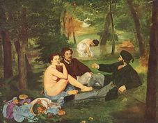
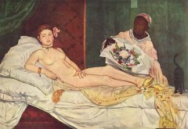

- Home
- Premières années
- Les débuts
- Les défis
- Natures mortes
- Œuvres
Édouard Manet
Les défis – Gloire et scandale
Pour la première fois dans l’histoire du Salon officiel et annuel de Paris, on permet en 1863 aux artistes refusés d’exposer leurs œuvres dans une petite salle annexe à l’exposition principale, où les visiteurs peuvent les découvrir : c’est le fameux Salon des Refusés. Édouard Manet, en y exposant trois œuvres controversées, s’impose comme une figure de l’avant-garde.
Le Bain, ou Le Déjeuner sur l’herbe (1862, Salon des Refusés de 1863)

Le Bain ou Le Déjeuner sur l'herbe
1863 (208 x 264 cm) Musée d'Orsay, Paris.
Parmi les trois peintures exposées au Salon, la composition centrale du Déjeuner sur l’herbe suscite les réactions les plus vives. Dans cette œuvre, Manet y confirme sa rupture avec le classicisme et l’académisme qu'il avait commencée avec La Musique aux Tuileries. La polémique vient moins du style de la toile que de son sujet : si le nu féminin est déjà répandu et apprécié, à condition d’être traité de façon pudique et éthérée, il est encore plus choquant de faire figurer dans la même composition deux hommes tout habillés. Une telle mise en scène exclut en effet la possibilité d’une interprétation mythologique et donne au tableau une forte connotation sexuelle. Le critique Ernest Chesneau, résumant ce malaise, affirme ne pouvoir « trouver que ce soit une œuvre parfaitement chaste que de faire asseoir sous bois, entourée d’étudiants en béret et en paletot, une fille vêtue seulement de l’ombre des feuilles », dénonçant « un parti pris de vulgarité inconcevable ». Le Déjeuner sur l’herbe ne fait pourtant que s’inspirer d’une œuvre de Raphaël représentant deux nymphes, et du Concert champêtre du Titien, la seule différence avec ces deux peintures étant les vêtements des deux hommes. Manet, de cette manière, relativise et ridiculise les goûts et les interdits de son époque.
Olympia, ou l’entrée dans la modernité (1863, exposé au Salon officiel de 1865)

Olympia
1863 (130,5 x 190 cm) Musée d'Orsay, Paris.
Bien que Manet ait finalement décidé de ne pas l’exposer au Salon des Refusés et de ne la dévoiler que deux ans plus tard, c’est en 1863 qu'est réalisée la toile d’Olympia. L’œuvre, qui allait susciter une controverse encore plus féroce que le Déjeuner sur l'herbe, représente une prostituée semblant sortir tout droit d’un harem à l’orientale et s’apprêtant visiblement à recevoir un client qui s'annonce avec un bouquet. Le tableau, qui associe et fait ressortir avec puissance le contraste entre la femme blanche et la femme noire, s’inscrit dans la longue tradition artistique et très académique dite de « l’odalisque à l’esclave » à l'instar des Odalisques d’Ingres, de l’Odalisque de Benouville et de celle de Jalabert dans les années 1840. Mais Olympia, avant tout, se veut une référence audacieuse à la célèbre Vénus d'Urbino du Titien.
Contrairement au Déjeuner sur l’herbe, Olympia n’est donc pas tant choquante par son thème que par la manière dont ce thème est traité. Outre sa nudité, le modèle (Victorine Meurent) affiche une insolence et une provocation indéniables. L’atmosphère générale d’érotisme, surtout, est renforcée par la présence du chat noir à la queue relevée, aux pieds de la jeune fille. L’animal fut ajouté par Manet, non sans humour, afin de remplacer l’innocent chien figurant dans la Vénus d’Urbino, et peut-être également afin de désigner par métaphore ce que la jeune fille cache précisément de sa main. D’autres éléments de la composition ont longtemps perturbé les critiques : c’est le cas du bouquet de fleurs, nature morte s’invitant de manière incongrue dans un tableau de nu, mais aussi du bracelet (qui appartenait à la mère du peintre) et de la grossièreté de la perspective.
Bien que Manet ait à l’évidence cherché le scandale, l’avalanche de récriminations dont il est la victime l’accable assez fortement, et le soutien de son ami Charles Baudelaire l’aide à passer ce cap difficile de sa vie.